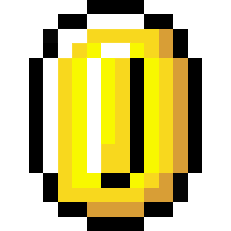

SOBRE MIM
Linguagens que quero aperfeiçoar
Java
PHP
JavaScript
TypeScript
Kotlin
Meus Objetivos na Área de TI
Me tornar Desenvolvedor Web Front-End
Aprender desenvolvimento Full Stack com Node.js e bancos de dados
Participar de projetos colaborativos usando Git e GitHub
Aprimorar conhecimentos em acessibilidade e performance web
Conquistar certificações em JavaScript, React e TypeScript
Ferramentas e Tecnologias que estou estudando
Git e GitHub
Figma (para prototipação)
Visual Studio Code
Insomnia (para testar APIs)
Docker (conceitos básicos)
Competências Comportamentais
Trabalho em equipe
Resolução de problemas
Organização e gestão de tempo
Comunicação clara com colegas e usuários
Lista de Definições
HTML
Linguagem de marcação para criação de conteúdo de um site.
CSS
Linguagem de marcação para a criação do design de um site.
JavaScript
Linguagem de programação para a criação de interatividade de um site.
voltar para a tela inicial.
